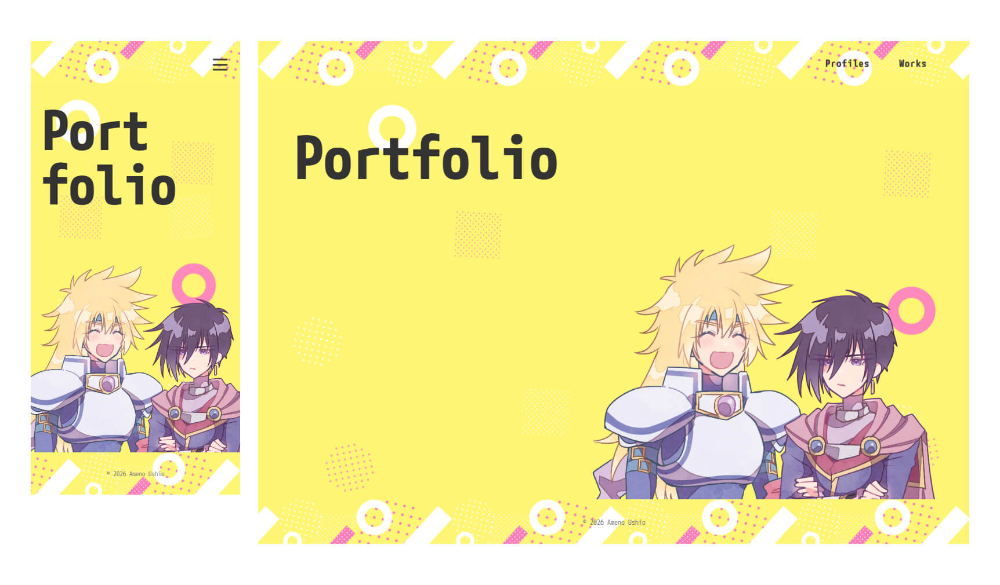
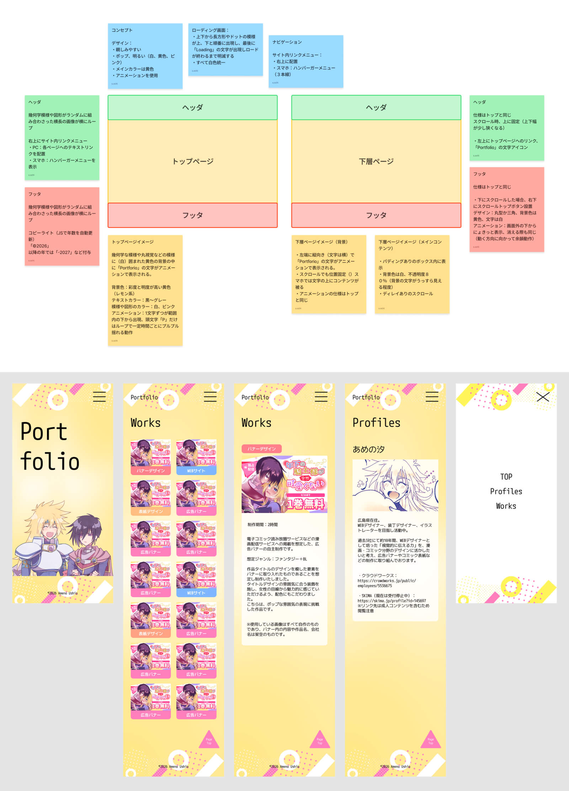

Webサイト


制作時間：12時間
本ポートフォリオサイトは、ワイヤーフレームの設計からデザイン、コーディングまで一貫して制作いたしました。
黄色を基調に、白とピンクをアクセントとして取り入れ、明るくポップな雰囲気に仕上げています。訪問してくださった方に楽しみながら作品をご覧いただけるよう、親しみやすさを意識して制作いたしました。
コーディングではAIも活用し、制作工程の効率化や作業時間の削減を図ることにも取り組んでおります。